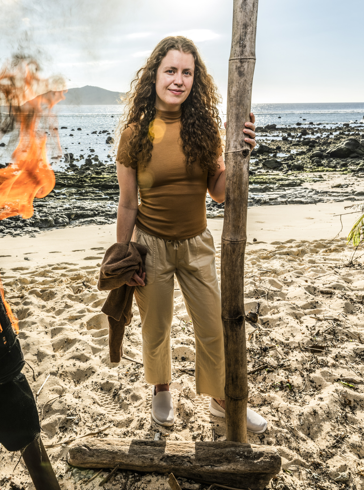

Emily Flippen

Episode 1
Emily was pulled into the Christian-Rick duo as a third member early on. She pitched voting out Ozzy instead of Jenna or Cirie, arguing it would break up the dangerous Ozzy-Cirie pair. Rick shared this preference, but the trio ultimately went with the majority to vote out Jenna. When Rick approached her about working together, she said "I could kiss you!"
Alliances
Third in the Christian-Rick-Emily trio. Reliable ally, not the primary strategist but a willing and enthusiastic partner. Protected within the group that controlled the first vote.
About
Emily Flippen had one of the most remarkable character arcs in recent Survivor history. On Season 45, she started as a blunt, direct outsider who clashed with her tribemates early on. Over the course of the game, she transformed into a softer, more interpersonal power player, finishing 7th. She's eager to find the "Goldilocks method" between being too aggressive and too passive.